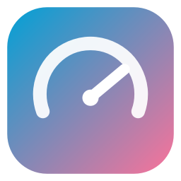

LagScope WINDOWS · macOS · LINUX MIT一個桌面延遲監視器。不只顯示數字——它會拆開「你 → 路由器 → 電信商 → 伺服器」 每一段，指出問題在哪一段，然後告訴你能做什麼。
Windows 有安裝版和免安裝版。安裝版之後會自己更新，不用再回來抓。
平常它就是桌面角落這一小塊，可以點穿、可以鎖住位置。托盤圖示直接把數字畫在上面。
「測速跑到 300 Mbps，B 站還是卡」是很常見的抱怨，而且測速這件事回答不了它。 卡頓來自延遲抖動和丟包，不是頻寬不足——更多時候，來自 CDN 排程器把你丟到哪一個節點。 所以 LagScope 每一分鐘都會記下當下服務你的是哪一台，事後就能這樣比：
| 節點 | 平均延遲 | 佔多少時間 | 卡頓 |
|---|---|---|---|
| upos-sz-mirrorhw.bilivideo.com華為雲 CDN | 67 ms | 33% | 0 |
| cn-hbyc-ct-01.bilivideo.com宜昌 · 中國電信 | 160 ms | 58% | 360 |
| xy118x123x45x67xy.mcdn.bilivideo.cnPCDN 邊緣節點（別人家的寬頻） | 300 ms | 8% | 0 |
主機名不是亂碼，它自己就寫了答案：cn 是中國大陸、hbyc 是湖北宜昌、
ct 是中國電信。LagScope 直接翻出來。認不出來的代碼它會原樣印出，
不會編一個看起來很像的城市名——因為會有人照著它去做決定。
它指的是「最花你時間的那個」，不是「最慢的那個」。上面那個 PCDN 節點雖然最慢， 但你只在上面待 8%；真正在拖你的是 160 ms 卻佔了 58% 時間的那個。
懸浮視窗顯示總延遲，並拆成串流延遲和顯示延遲。B 站直播量的是離直播邊緣多遠； 一般影片量起播延遲加頻寬餘量。也能量任何一個會連網的程式，或你自己填的位址。
一鍵拆出你 → 路由器 → 第一跳 → 目標各段的延遲和丟包，直接說該怪哪一段。 卡頓時會自動在背景跑一次精簡版，把結論記在那一分鐘上。
每分鐘存一行摘要，保留七天，關掉程式也不會丟。走勢圖看得出「昨晚九點特別卡」， 還能匯出成一個自包含的 HTML 報告寄給客服。
按星期幾 × 幾點分組，找出有沒有時段性。「沒有時段性」也是一個真的答案—— 它排掉了晚尖峰壅塞這一整類原因，把問題指向固定的東西。
標記「我剛剛換到 5GHz」，之後報告會用前後一樣長的時間窗口對照。 拿一整晚的「之前」比五分鐘的「之後」，什麼改動都會顯得有效——所以它不那樣做。
把診斷結論變成一份照順序排的建議，每一條都印出它的依據。 不會因為「這是普遍的好建議」就給你——一份每次都叫你重開路由器的清單，只會教會你不要看它。
主動測速，而且測的是你正在看的那個 CDN，不是某個測速網站。 時間和流量雙上限，測速前會先在歷史上標記，免得把自己造成的尖峰當成故障。
自動跟隨你在看的頁面、自動切換到最快的 CDN 節點、手機開網頁看即時數字、 五種介面語言（简中／繁中／English／日本語／한국어）。
一個診斷工具最容易犯的錯，不是量不到東西，而是在雜訊裡找到一個假的模式， 然後有人照著它花一個週末去修一個不存在的問題。所以資料不夠的時候，它就說資料不夠。
[ ok ] Bilibili API reachable TCP handshake: 51 ms API answered, code=0 [ ok ] path tools (ping / gateway) default gateway: 192.168.0.1 8.8.8.8: 23 ms avg, 0% loss [skip] CDN edges needs a room id
托盤選單的「產生診斷報告」會把每個探測對真實伺服器跑一次，把拿到什麼原封不動印出來， 不做任何斷言，結果直接進剪貼簿。輸出裡沒有 Wi-Fi 名稱、沒有公網 IP、沒有帳號。
這四項需要一個正在直播的房間號才跑得到。在此之前它們只對著測試資料驗證過—— 這一點寫在這裡，而不是留給你自己發現。
沒有統計、沒有回報、沒有帳號、沒有 Cookie。不讀你的登入狀態，任何人下載就能用。
| 連到哪裡 | 什麼時候 | 為什麼 |
|---|---|---|
| 你正在監測的對象 | 每次探測 | 就是要量它的延遲 |
| api.live.bilibili.comapi.bilibili.com | 只在監測 B 站時 | 取播放位址（免登入、不帶 Cookie） |
| 你的路由器／第一跳 | 按下體檢，或卡頓時 | 分段診斷（系統內建 ping） |
| api.github.com | 每天最多一次，可關 | 查最新版本號 |
| speed.cloudflare.com | 只在你按測速、且沒在看東西時 | 公開測速點 |
自動更新是這個程式裡唯一會「下載檔案然後執行它」的功能，所以規矩訂得很死： 只收 https、主機必須在固定的 GitHub 清單裡（跟完重導向後再檢查一次）、 位元組必須符合 API 公布的 sha256，不符就直接刪掉。沒公布校驗碼就不自動裝，只給你連結。
MIT 授權。562 個自動化測試，在 Windows、macOS、Ubuntu 上以 Python 3.9／3.11／3.12 執行。 約 15,000 行 Python，介面用 PySide6。